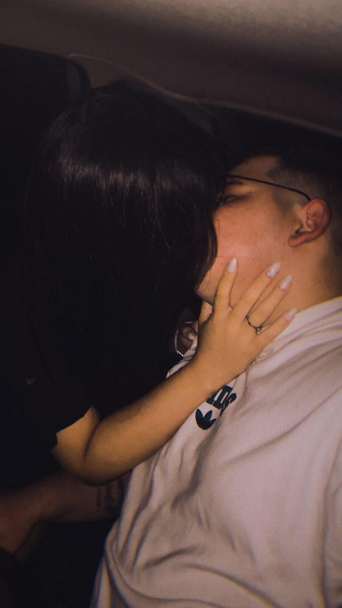

Meu amor
Desde que você entrou na minha vida, ela se tornou mais leve, divertida e fácil de ser vivida. Agradeço a Deus todos os dias por ter te colocado no meu caminho
e por ter te dado a paciência necessária pra me aguentar todos os dias.
Eu te amo muito!